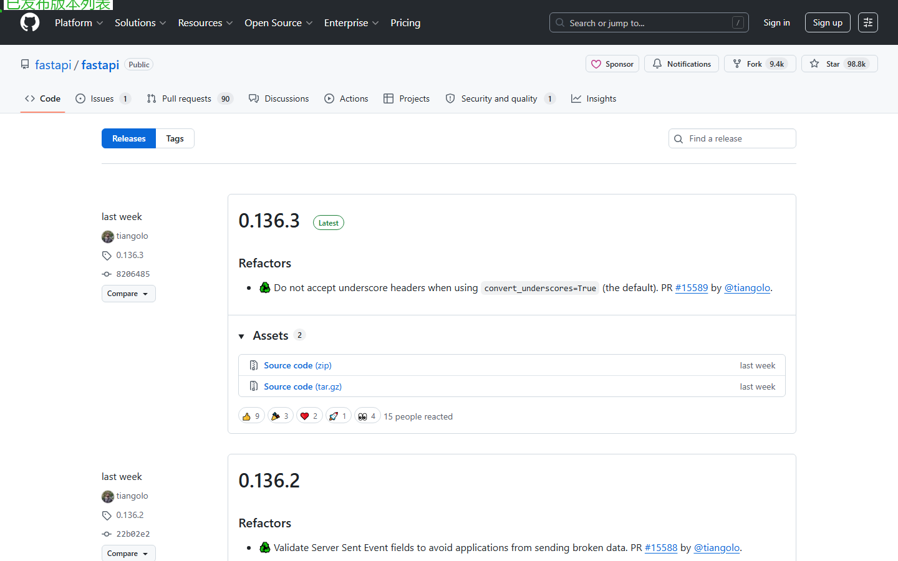

第十三课：项目管理（下）— Wiki、Discussions、Releases、Packages
时长：20 分钟 | 前置：无（独立内容）| P0 词条：12 个 | 覆盖 UI 元素：14 个
学习目标
学完这节课，你能：
- 创建和管理 Wiki 页面作为项目文档
- 理解 Discussions（论坛）的作用和使用方法
- 创建 Release 并写 Release Notes
- 理解 Packages 是什么（不深入）
0. 开场（1 min）
画面：仓库顶部标签栏

旁白：
"一个完整的开源项目，不只有代码和 Issue。还有文档（Wiki）、讨论区（Discussions）、发布版本（Releases）、以及分发包（Packages）。
这四个功能都藏在仓库的顶部标签栏里。用好了，你的项目会更专业。"
1. Wiki（8 min）
画面：点击仓库顶部 Wiki 标签

1.1 Wiki 是什么
| 概念 | 说明 |
|---|---|
| Wiki | 项目的小型文档系统 |
| 和 README 的区别 | README 是首页简介，Wiki 是长篇详细文档 |
| 典型内容 | API 文档、安装指南、贡献指南、FAQ、架构图 |
| 谁可以编辑 | 有仓库写权限的人（默认公开可读） |
1.2 Wiki 页面布局
| 区域 | 说明 |
|---|---|
| 左侧侧边栏 | 所有 Wiki 页面的目录 |
| 主区域 | 当前页面的内容（Markdown 渲染） |
| 页面底部 | 最后一次编辑时间和编辑者 |
| 右上角 | Edit / New Page / Page History |
1.3 创建和编辑 Wiki 页面
| 操作 | 说明 |
|---|---|
| New Page | 创建新页面 |
| 输入页面标题 | 建议用英文（URL 会更友好） |
| 写内容 | Markdown 编辑器，支持图片、代码块、表格 |
| 底部 Edit message | 描述这次改了什么（可选） |
| Save | 保存页面 |
1.4 Wiki 侧边栏管理
| 操作 | 说明 |
|---|---|
| 默认按字母排序 | 可以用自定义侧边栏覆盖 |
创建 _Sidebar.md |
在 Wiki 里创建同名页面，写列表控制侧边栏 |
创建 _Footer.md |
控制 Wiki 底部文字 |
1.5 Wiki 和 Pages 的区别
| Wiki | GitHub Pages | |
|---|---|---|
| 形式 | 简单的 Markdown 页面 | 完整的静态网站（Jekyll） |
| 门槛 | 很低，直接写 Markdown | 中等，需要一点网页基础 |
| 适合 | 项目文档 | 项目官网、博客 |
| URL | github.com/user/repo/wiki |
user.github.io/repo |
操作演示：
【录屏】点 Wiki 标签 → New Page → 写一点内容 → Save → 演示侧边栏 → 页脚
2. Discussions（论坛）（4 min）
画面：点击 Discussions 标签
2.1 Discussions 是什么
| 概念 | 说明 |
|---|---|
| 是什么 | 项目内置的论坛/讨论区 |
| 和 Issue 的区别 | Issue 用于具体任务（Bug/Feature），Discussions 用于开放式讨论 |
| 什么时候用 | 问问题、讨论设计方案、分享经验、社区通知 |
| 启用条件 | 需要在 Settings → General → Features 里手动开启 |
2.2 Discussions 页面结构
| 元素 | 说明 |
|---|---|
| 左侧 Categories | 分类：Announcements / Ideas / Q&A / General 等 |
| 主区域 | 讨论帖列表 |
| 右侧 New discussion | 发起新讨论 |
| 搜索框 | 搜索讨论内容 |
2.3 讨论帖的功能
| 功能 | 说明 |
|---|---|
| 发布 | Markdown 编辑器，和 Issue 一样 |
| 回复 | 支持嵌套回复，比 Issue 的平铺评论更结构化 |
| 答案标记 | Q&A 类型的讨论，可以标记某个回复为"答案" |
| Upvote 投票 | 给回复点赞投票 |
| Pin | 置顶重要讨论 |
| Lock | 锁定过时讨论 |
2.4 什么时候用 Discussions 而不是 Issue
| 场景 | 用 Issue | 用 Discussions |
|---|---|---|
| 确认是 Bug | ✅ | ❌ |
| 不确定是不是 Bug | ❌ | ✅（Q&A 分类先问） |
| 提一个具体的功能改进 | ✅ | ❌ |
| 讨论一个大的设计方向 | ❌ | ✅（Ideas 分类） |
| 问"为什么这个 API 这样设计" | ❌ | ✅（Q&A 分类） |
3. Releases（4 min）
画面：右侧面板或 /releases 页面
3.1 Release 是什么
| 概念 | 说明 |
|---|---|
| Release | 正式发布的版本 |
| 和 Tag 的关系 | 每个 Release 对应一个 Git Tag |
| 包含什么 | 版本号、Release Notes（更新说明）、下载文件 |
3.2 创建 Release
| 步骤 | 操作 |
|---|---|
| 1 | 进仓库 → 右侧 Releases → Create a new release |
| 2 | Choose a tag → 输入版本号如 v1.0.0 → Create new tag |
| 3 | 选 Target（通常是 main 分支） |
| 4 | 写 Release title（版本号或名称） |
| 5 | 写 Release Notes（这个版本改了什么） |
| 6 | 如果需要，拖入文件（编译好的 .exe / .dmg / .jar 等） |
| 7 | 如果是预发布版，勾选 "Set as a pre-release" |
| 8 | 点 Publish release |
3.3 Release Notes 怎么写
## What's Changed
- 新增了深色模式（#1234 by @username）
- 修复了登录页面在 Safari 上的渲染问题（#5678 by @username）
## Breaking Changes
- `Button` 组件的 `type` 属性改名为 `variant`
## New Contributors
- @new-contributor 提了他的第一个 PR！🎉
**Full Changelog**: https://github.com/.../compare/v0.9.0...v1.0.0
GitHub 可以自动生成一部分 Release Notes，基于合并的 PR 列表。
3.4 下载 Asset
| 元素 | 说明 |
|---|---|
| Source code (zip) | GitHub 自动打包的源码 zip |
| Source code (tar.gz) | 同上，tar.gz 格式 |
| 你上传的文件 | 编译好的二进制文件 / 安装包等 |
操作演示：
【录屏】Create a new release → 输入 v1.0.0 → 写 Release Notes → Publish → 展示发布后的页面
4. Packages（2 min）
画面：右侧面板或仓库主页面底部的 Packages
4.1 Packages 是什么（仅介绍，不深入）
| 概念 | 说明 |
|---|---|
| GitHub Packages | GitHub 的包托管服务 |
| 支持什么 | npm、Docker、Maven、NuGet、RubyGems 等 |
| 有什么用 | 把你的库打包发布，别人可以 npm install 你的包 |
4.2 和 Releases 的区别
| Releases | Packages | |
|---|---|---|
| 是什么 | 版本发布公告 | 可安装的软件包 |
| 面向 | 所有人（公告+下载链接） | 开发者（包管理工具下载） |
| 举例 | 发布 v1.0.0，写更新日志 | 发布 npm 包，别人 npm install your-package |
| 两者关系 | 通常一个 Release 会伴有对应的 Package |
Packages 是进阶功能，不展开。有兴趣的学完这门课后自行搜索 "GitHub Packages 教程"。
课后作业
- 在你自己仓库的 Wiki 里创建至少 2 个页面，练习侧边栏
- 开启 Discussions（如果还没开），发起一个 Q&A 类型的讨论
- 创建一个 Release（版本号随意，如 v0.1.0），写 3 条 Release Notes
- 在 Releases 页面找几个大项目的 Release Notes（如 VS Code、React），学习格式
本课术语速查
{.glossary-table}
| 英文 | 中文 | 出现位置 |
|---|---|---|
| Wiki | 维基文档 | 顶部标签 |
| Pages | 页面（或 Pages 静态网站） | Wiki 侧边栏 |
| Sidebar | 侧边栏 | Wiki 自定义 |
| Footer | 页脚 | Wiki 自定义 |
| Discussions | 讨论/论坛 | 顶部标签 |
| Categories | 分类 | Discussions 左侧 |
| Q&A | 问答 | Discussions 分类 |
| Announcements | 公告 | Discussions 分类 |
| Release | 发布版本 | 右侧面板 |
| Tag | 标签 | 创建 Release 时需要选 |
| Release Notes | 版本说明 | Release 正文 |
| Pre-release | 预发布版 | Release 复选框 |
| Asset | 附件/下载文件 | Release 页底部 |
| Packages | 包托管 | 右侧面板 / 顶部标签 |